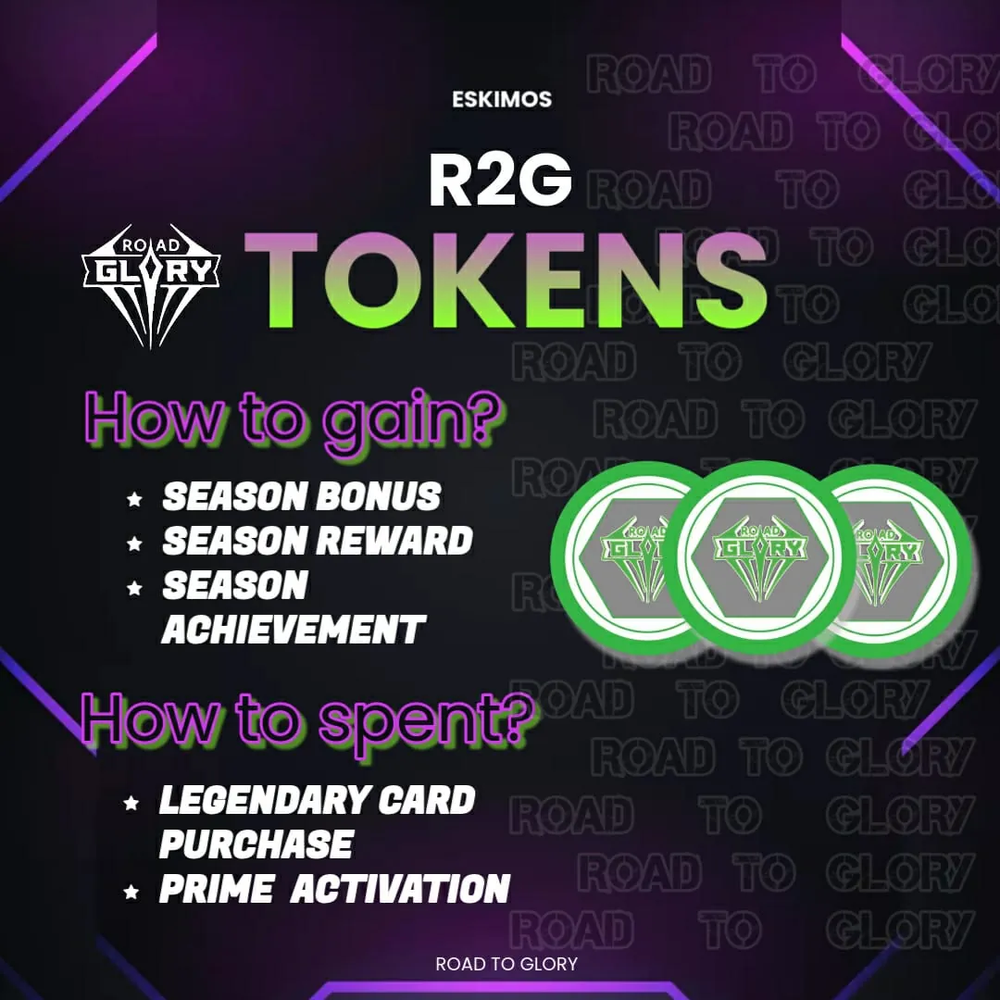
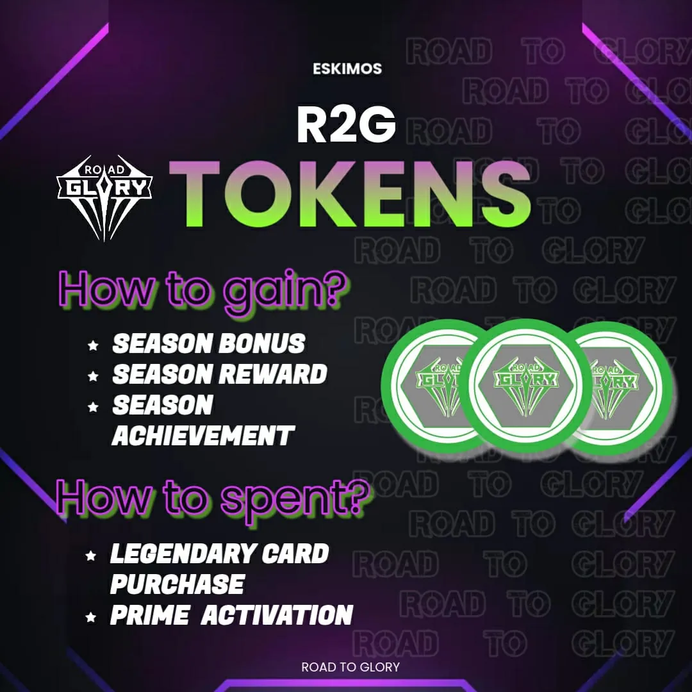
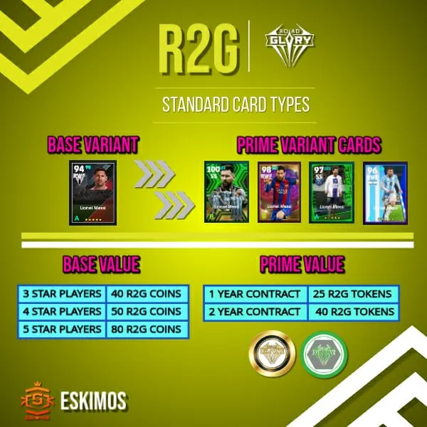
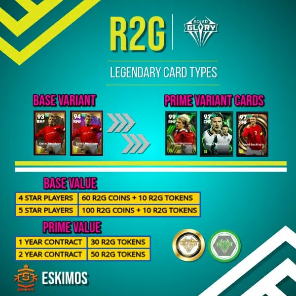

Tournament Guide
Your roadmap to glory
Career Mode FAQs
Frequently asked questions about how to play career mode in Eskimos Road to Glory.
-
Buy players through auction and use these players only to make the squad to compete in R2G.
-
Each franchise have clubs coins as their bank balance. They can use this amount to bid and buy 5☆, 4☆ and 3☆ players during player auction.
-
Whenever a new franchise is registered they are rewarded with a total of 2000 R2G Coins and 100 R2G Tokens. Each club will also get R2G Coins by their performance in each match but this coins will only add during the season end.
-
R2G Coins can be used during the transfer market and also R2G Coins are used to pay the player salary.
-
No, we won't lose player. The franchise will only lose player when his contract comes to an end. At that time only he will be free agent. If salary is not paid, the player can't be used for upcoming matches.
Road Map
Follow our season roadmap to understand how the tournament progresses from start to finish.

Player Card
Player cards show the important stats and attributes of players available in the auction.
 

Transfer Market
The transfer market allows teams to buy, sell, loan, and trade players during specific periods.
-
There will be two Transfer window for a season. The transfer window time will be given accordingly and during that time sale, swap and loan for a player can be done.
-
The loan amount is determined between the base price and auctioned price.
-
No, free transfer is not allowed, but one can sale the player for interested club coins.
Card Types
Different card types represent various levels of player rarity and special abilities.


Season Awards
End-of-season awards recognize top performers and achievements throughout the tournament.

Match Bonus
Earn special bonuses and rewards for performances during matches.
Match Guide
Follow these rules when playing matches in the Eskimos Road to Glory tournament.
- CAN ONLY USE PLAYERS BOUGHT FROM PLAYER AUCTION, IF NOT AVAILABLE CAN USE 1☆ OR 2☆ PLAYERS
- MATCH TIME:- 6 MINUTES
- PENALTY AND EXTRA TIME SHOULD BE OFF
- RANDOM CONDITION
Important
Administrative Notes
- If there is any doubts or issue contact admins directly and clear it as soon as possible.
- All decisions taken by admins will be final.